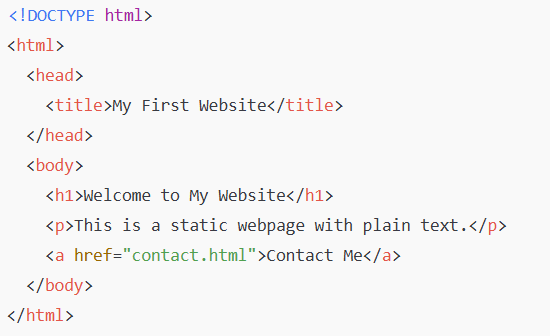
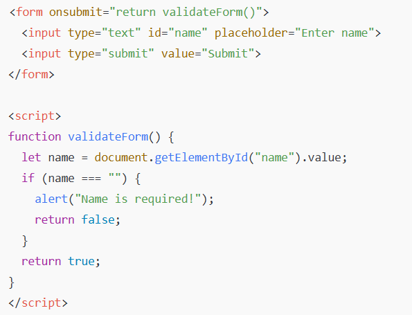
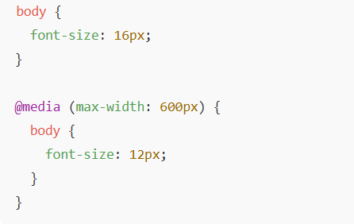

By Satakshi Datta
By Satakshi Datta
The web you see today is drastically different from the one that existed a few decades ago. In the early 1990s, websites were nothing more than text-heavy pages with blue hyperlinks, no styling, and almost no interaction. Fast forward to 2025, and the web has transformed into a dynamic, visually stunning, and highly interactive ecosystem powered by advanced frameworks, tools, and even artificial intelligence.
This journey — from static pages to AI-driven, personalized experiences — is the story of frontend development. Let’s take a closer look at how it all began, where we are today, and where we are heading next.
The World Wide Web was born in 1991 when Tim Berners-Lee introduced the first web page. At the time, frontend development didn’t even exist as a job title. Developers worked with:
<b>, <i>, <u>, and
headings. No
CSS for styling.
<a> tags allowed users to jump
between pages.
A typical webpage looked like this:

These were static websites — every user saw the same thing, and updating content meant manually editing and re-uploading HTML files.
👉 Key Limitation: No styling, no interactivity, no personalization.
Everything changed in 1995 when Brendan Eich created JavaScript at Netscape. For the first time, developers could make web pages interactive:
Suddenly, the web became more engaging. A button could respond to a click, an image could change when hovered, and forms could alert users about errors in real time.
Example: JavaScript-powered form validation (1998 style)

👉 This was the birth of frontend interactivity.
As websites became more complex, raw JavaScript became difficult to manage. Developers needed reusable code and structured approaches. This gave rise to libraries and frameworks.
jQuery (2006)
 '
'
AngularJS (2010)
React (2013)
Vue.js (2014)
👉 Impact: These tools made it possible to build web apps that felt like desktop applications (think Gmail, Facebook, or Twitter).
The explosion of smartphones created a new challenge: websites needed to look good on all screen sizes.
Example: Responsive media query

👉 From this point, designing for mobile-first became the industry standard.
Today, frontend development is about much more than “making things look good.” It involves:
Code splitting (load only what’s needed).
Lazy loading images for faster performance.
Using next-gen formats like WebP for images.
Websites must be usable by everyone, including people with disabilities.
Semantic HTML (<header>, <nav>,
<footer>).
ARIA roles for screen readers.
Proper color contrast for readability.
Modern frontend developers use:
Package managers: npm, Yarn
Build tools: Webpack, Vite
Version control: Git, GitHub
Using libraries like React, Angular, or Vue, developers build apps as reusable UI components.
👉 This makes development scalable, modular, and maintainable.
Frontend development is evolving faster than ever, with AI, AR/VR, and WebAssembly shaping the next generation of web experiences.
Personalized layouts and recommendations (e.g., Netflix, Spotify).
AI assistants integrated into websites (chatbots, voice commands).
Tools like GitHub Copilot and ChatGPT helping developers write code.
Enables high-performance apps like video editors, 3D games, and CAD tools directly in the browser.
Example: Figma uses Wasm to deliver fast design rendering.
WebXR APIs enable immersive 3D experiences directly on websites.
E-commerce brands will let customers “try” products virtually.
Tools like Webflow and Bubble allow non-developers to build web apps.
Developers will still be needed to push boundaries, but workflows will change.
Frontend started with static pages but has grown into creating immersive experiences.
JavaScript and frameworks transformed the way developers build apps.
Mobile-first and responsive design are now mandatory.
Modern frontend is about performance, accessibility, and user experience.
Future frontend will be shaped by AI, WebAssembly, and immersive technologies.
Frontend development is one of the most exciting areas of technology because it evolves at lightning speed. From static HTML pages to AI-driven personalization, the journey has been nothing short of revolutionary.
If you’re a frontend developer today, you’re not just writing code — you’re crafting digital experiences that impact millions of users worldwide. The future is even brighter, as the boundaries between code, design, and intelligence continue to blur.
👉 So, whether you’re learning your first <div> tag or
experimenting with
AI-driven UIs, remember: frontend is about creating human-centered
experiences. And that mission will never change.